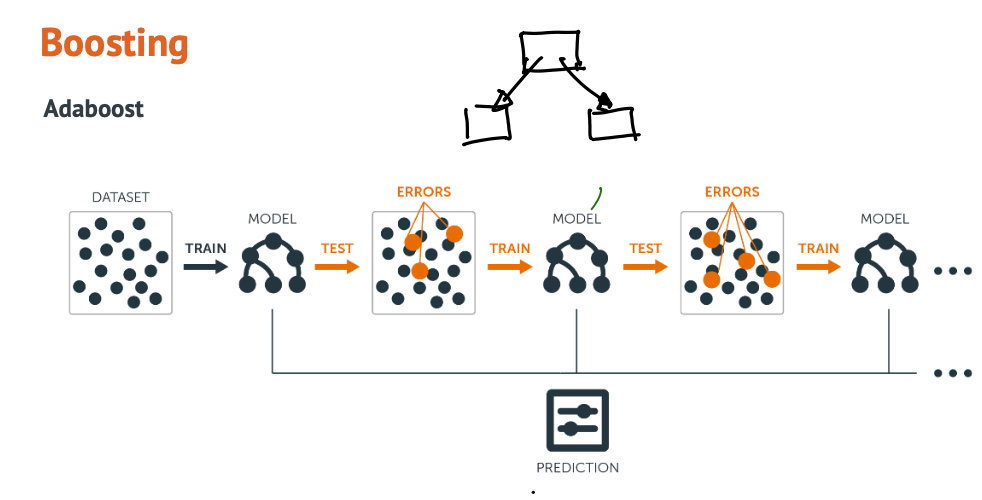
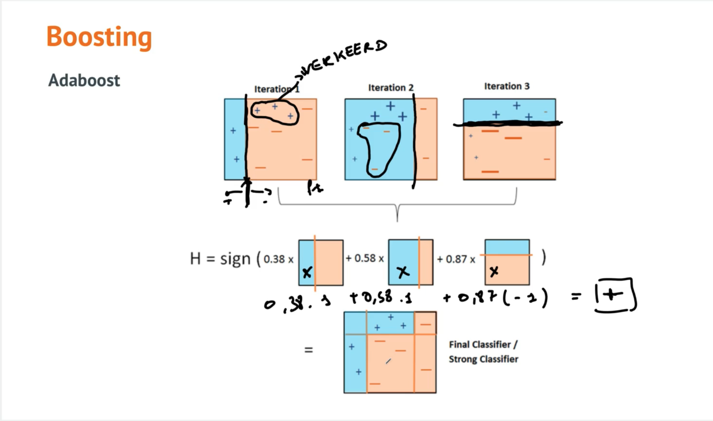

Adaboost

Adaboost is een ensemble learning method initieel bedoelt om binary classifiers efficienter te maken.
Het ensemble wordt opgebouwd uit verschillende eenvoudige classifiers (weak classifiers) die gecombineerd worden tot 1 classifier die accurate predicties kan doen.
Hoe worden die getraind ? De ene na de andere.
De eerste op een subset van de dataset.
Samples die verkeerd werden geclassificeerd krijgen meer belang bij volgende weak classiifer die je traint.
Derde weak classifier gaat opnieuw meer belang hechten aan de fouten van de vorige classifier.
enzovoort
Qua model/estimator kan je gelijk welk model gebruiken maar in praktijk neemt men meestal een zeer eenvoudig model : stump = decision tree die maar 1 niveau diep gaat
